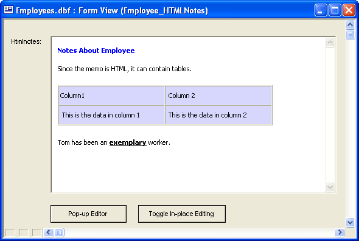

Placing an HTML Edit Control on a Form
The following procedure describes the process of placing the Microsoft DHTML Edit Control for IE5 ( Dhtmledit.Dhtmledit ) ActiveX control on a form. This form is bound to the HTMLnotes memo field in the underlying table.
 Note : Since the
ActiveX control saves HTML encoded text into the memo field, it should
only be edited and viewed through the ActiveX control.
Note : Since the
ActiveX control saves HTML encoded text into the memo field, it should
only be edited and viewed through the ActiveX control.
Open a form in the Form Editor.
Select the
 tool from the Toolbox and draw
a rectangle on the form. This displays the Insert ActiveX
Control dialog.
tool from the Toolbox and draw
a rectangle on the form. This displays the Insert ActiveX
Control dialog.Select the "Microsoft Web Browser" control and click Insert.
Right click on the ActiveX control and select Properties... .
Note the Object name found on the Setup tab.
Close the ActiveX Properties dialog.
Right click on the form's background and select Events > OnActivate.
Assuming that the control's name is activeX1 and the memo field's name is HTMLNOTES, enter the following Xbasic code. This code causes the HTMLNOTES field of the current record to be displayed and turns off editing.
|
dim px as P 'get a pointer to the activeX object px = topparent:activex1.activex 'set the activeX's documenthtml property dim tbl as P tbl = table.current() px.documenthtml = tbl.HTMLNOTES 'set the activeX control to browse mode 'you cannot edit text in the control when browsemode is .T. px.browsemode = .T. |
Click
 to save the code and return to the Form
Editor.
to save the code and return to the Form
Editor.Right click on the form's background and select Events > OnEnter.
Enter the following Xbasic code. This code allows you to add a new record. It clears the ActiveX control and turns on editing.
|
dim px as P 'get a pointer to the activeX object px = topparent:activex1.activex px.documenthtml = "" px.browsemode = .T. |
Click
to save the code and return to the Form
Editor.Right click on the form's background and select Events > OnFetch.
Enter the following Xbasic code. This code displays the current record when you are in Change or View mode, and gives you a clear window when in Enter mode.
|
dim px as P 'get a pointer to the activeX object px = topparent:activex1.activex 'set the activeX control to browse mode - 'you cannot edit text in the control when browsemode is .T. px.browsemode = .T. 'set the activeX's documenthtml property dim tbl as P tbl = table.current() if (tbl.mode_get()<> 2) then px.documenthtml = t.HTMLNOTES 'if you are in enter mode (i.e. you are on the new record), 'then set the contents of the control to an empty string else px.documenthtml = "" end if |
Right click on the ActiveX control and select Events > ActiveXEvent.
Modify the onkeypress() function to include this code.
|
function onkeypress as v () dim tbl as P tbl = table.current() 'if the table is still in view mode 'then put the form into change mode if (tbl.mode_get()= 0) then topparent.change_mode() end if t.HTMLNOTES = topparent:activex1.activex.documenthtml end function |
Click
to save the code and return to the Form
Editor.Click
 to place a button on the form.
to place a button on the form.Label the button "Toggle In-place Editing", and place this code under its OnPush event. This code toggles the ability to edit in the ActiveX control.
|
dim px as P 'get a pointer to the activeX object px = topparent:activex1.activex px.browsemode = .not. px.browsemode |
Click
to save the code and return to the Form
Editor.Click
to place a button on the form.Label the button "Pop-up Editor", and place this code under its OnPush event. This code toggles opens the HTML Editor with the contents of the current record, and then saves its contents when you click OK.
|
dim px as P 'get a pointer to the activeX object px = topparent:activex1.activex dim ptr as P ptr = a5_html_modal(px.documenthtml, "Edit", .t.) if ptr.lastbutton = "OK" then px.documenthtml = ptr.text dim tbl as P tbl = table.current() if tbl.mode_get()= 0 then 'force the form into change mode so 'that the Save icon on the toolbar is enabled topparent.change_mode() end if 'update the htmlNotes field tbl.HTMLNOTES = ptr.text end if |
Save your work and switch to form view. The form should look something like this:

See Also